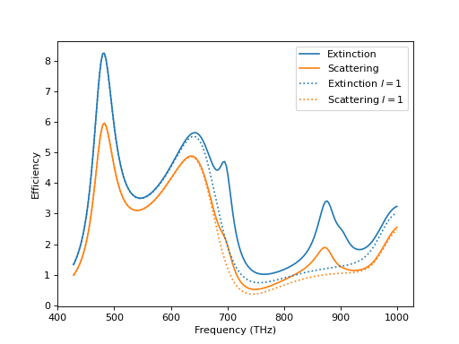
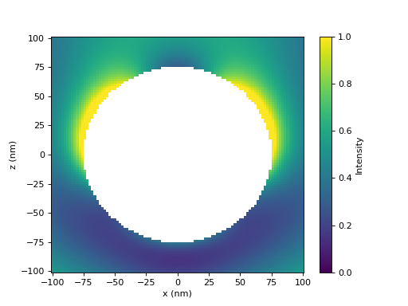
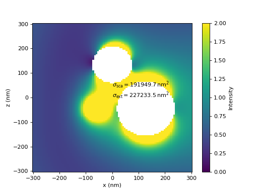
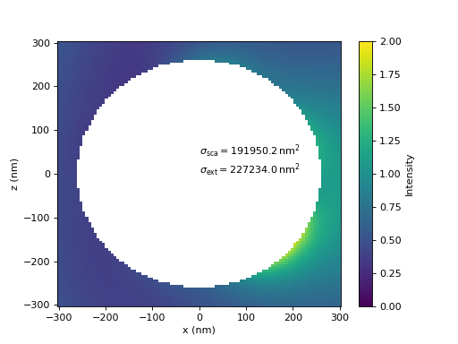
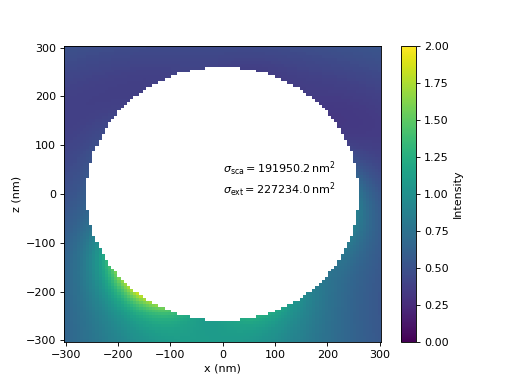
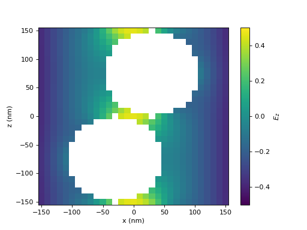
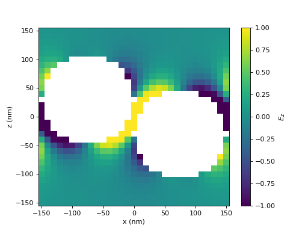
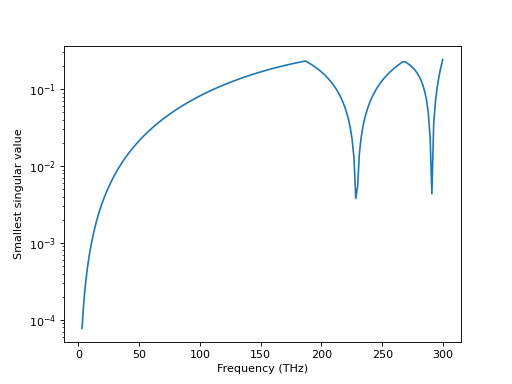

T-Matrices#
One of the main objects for electromagnetic scattering calculations within treams are T-matrices. They describe the scattering response of an object by encoding the linear relationship between incident and scattered fields. These fields are expanded using the vector spherical wave functions.
The T-matrices of spheres or multiple layers of spherical shells, present for example in core-shell particles, can be obtained analytically. For more complicated shapes numerical methods are necessary to compute the T-matrix. Once the T-matrix of a single object is known, the electromagnetic interaction between particle cluster can be calculated efficiently. Such clusters can be analyzed in their local description, where the field expansions are centered at each particle of the cluster, or in a global description treating the whole cluster as a single object.
treams is particularly aimed at analyzing scattering within lattices. These lattices can be periodic in one, two, or all three spatial dimensions. The unit cell of those lattices can consist of an arbitrary number of objects described by a T-matrix.
Spheres#
It’s possible to calculate the T-matrix of a single (multi-layered) sphere with the
method sphere(). We start by defining the relevant parameters for
our calculation and creating the T-matrices themselves.
k0s = 2 * np.pi * np.linspace(1 / 700, 1 / 300, 200)
materials = [treams.Material(16 + 0.5j), treams.Material()]
lmax = 4
radius = 75
spheres = [treams.TMatrix.sphere(lmax, k0, radius, materials) for k0 in k0s]
Now, we can easily access quantities like the scattering and extinction cross sections
xs_sca = np.array([tm.xs_sca_avg for tm in spheres]) / (np.pi * radius ** 2)
xs_ext = np.array([tm.xs_ext_avg for tm in spheres]) / (np.pi * radius ** 2)
From the parameter lmax = 4 we see that the T-matrix is calculated up to the forth
multipolar order. To restrict the T-matrix to the dipolar coefficients only, we can
select a basis containing only those coefficients.
swb_lmax1 = treams.SphericalWaveBasis.default(1)
spheres_lmax1 = [tm[swb_lmax1] for tm in spheres]
xs_sca_lmax1 = np.array([tm.xs_sca_avg for tm in spheres_lmax1]) / (np.pi * radius ** 2)
xs_ext_lmax1 = np.array([tm.xs_ext_avg for tm in spheres_lmax1]) / (np.pi * radius ** 2)
Now, we can look at the results by plotting them and observe, unsurprisingly, that for larger frequencies the dipolar approximation is not giving an accurate result. Finally, we visualize the fields at the largest frequency.
tm = spheres[-1]
inc = treams.plane_wave([0, 0, tm.k0], 1, k0=tm.k0, material=tm.material)
sca = tm @ inc.expand(tm.basis)
x = np.linspace(-100, 100, 101)
y = 0
z = np.linspace(-100, 100, 101)
xx, zz = np.meshgrid(x, z, indexing="ij")
yy = np.full_like(xx, y)
grid = np.stack((xx, yy, zz), axis=-1)
intensity = np.zeros_like(xx)
valid = tm.valid_points(grid, [radius])
intensity[~valid] = np.nan
intensity[valid] = 0.5 * np.sum(
np.abs(inc.efield(grid[valid]) + sca.efield(grid[valid])) ** 2, -1
)
We select the T-matrix and illuminate it with a plane wave. Next, we set up the grid and choose valid points, namely those that are outside of our spherical object. Then, we can calculate the fields as a superposition of incident and scattered fields.

{kind=link}
{kind=link}

{kind=link}
{kind=link}
Clusters#
Multi-scattering calculations in a cluster of particles is a typical application of the T-matrix method. We first construct an object from four different spheres placed at the corners of a tetrahedron. Using the definition of the relevant parameters
k0 = 2 * np.pi / 1000
materials = [treams.Material(16 + 0.5j), treams.Material()]
lmax = 3
radii = [110, 90, 80, 75]
positions = (220 / np.sqrt(24)) * np.array(
[
[np.sqrt(8), 0, -1],
[-np.sqrt(2), np.sqrt(6), -1],
[-np.sqrt(2), -np.sqrt(6), -1],
[0, 0, 3],
]
)
we can simply first create the spheres and put them together in a cluster, where we immediately calculate the interaction.
spheres = [treams.TMatrix.sphere(lmax, k0, r, materials) for r in radii]
tm = treams.TMatrix.cluster(spheres, positions).interaction.solve()
Then, we can illuminate with a plane wave and get the scattered field coefficients and the scattering and extinction cross sections for that particular illumination.
inc = treams.plane_wave([k0, 0, 0], 0, k0=tm.k0, material=tm.material)
sca = tm @ inc.expand(tm.basis)
xs = tm.xs(inc)
Finally, with few lines similar to the plotting of the field intensity of a single sphere we can obtain the fields outside of the sphere
x = np.linspace(-300, 300, 101)
y = 0
z = np.linspace(-300, 300, 101)
xx, zz = np.meshgrid(x, z, indexing="ij")
yy = np.full_like(xx, y)
grid = np.stack((xx, yy, zz), axis=-1)
intensity = np.zeros_like(xx)
valid = tm.valid_points(grid, radii)
intensity[~valid] = np.nan
intensity[valid] = 0.5 * np.sum(
np.abs(inc.efield(grid[valid]) + sca.efield(grid[valid])) ** 2, -1
)
Up to here, we did all calculations for the cluster in the local basis. By expanding the incident and scattered fields in a basis with a single origin we can describe the same object. Often, a larger number of multipoles is needed to do so and some information on fields between the particles is lost. But, the description in a global basis can be more efficient in terms of matrix size.
tm_global = tm.expand(treams.SphericalWaveBasis.default(6))
sca = tm_global @ inc.expand(tm_global.basis)
xs = tm_global.xs(inc)
x = np.linspace(-300, 300, 101)
y = 0
z = np.linspace(-300, 300, 101)
xx, zz = np.meshgrid(x, z, indexing="ij")
yy = np.full_like(xx, y)
grid = np.stack((xx, yy, zz), axis=-1)
intensity_global = np.zeros_like(xx)
valid = tm_global.valid_points(grid, [260])
intensity_global[~valid] = np.nan
intensity_global[valid] = 0.5 * np.sum(
np.abs(inc.efield(grid[valid]) + sca.efield(grid[valid])) ** 2, -1
)
A comparison of the calculated near-fields and the cross sections show good agreement between the results of both, local and global, T-matrices.

{kind=link}
{kind=link}

{kind=link}
{kind=link}

{kind=link}
{kind=link}
In the last figure, the T-matrix is rotated by 90 degrees about the y-axis and the illumination is set accordingly to be a plane wave propagating in the negative z-direction, such that the whole system is the same simply. It shows how the rotate operator produces consistent results.
inc = treams.plane_wave([0, 0, -k0], 0, k0=tm.k0, material=tm.material)
tm_rotate = tm_global.rotate(0, np.pi / 2)
sca = tm_rotate @ inc.expand(tm_rotate.basis)
xs = tm_rotate.xs(inc)
x = np.linspace(-300, 300, 101)
y = 0
z = np.linspace(-300, 300, 101)
xx, zz = np.meshgrid(x, z, indexing="ij")
yy = np.full_like(xx, y)
grid = np.stack((xx, yy, zz), axis=-1)
intensity_global = np.zeros_like(xx)
valid = tm_rotate.valid_points(grid, [260])
intensity_global[~valid] = np.nan
intensity_global[valid] = 0.5 * np.sum(
np.abs(inc.efield(grid[valid]) + sca.efield(grid[valid])) ** 2, -1
)
One-dimensional arrays (along z)#
Next, we turn to systems that are periodic in the z-direction. We calculate the scattering from an array of spheres. Intentionally, we choose a unit cell with two spheres that overlap along the z-direction, but are not placed exactly along the same line. This is the most general case for the implemented lattice sums. After the common setup of the parameters we simply create a cluster in a local basis.
k0 = 2 * np.pi / 700
materials = [treams.Material(-16.5 + 1j), treams.Material()]
lmax = 3
radii = [75, 75]
positions = [[-30, 0, -75], [30, 0, 75]]
lattice = 300
kz = 0
This time we let them interact specifying a one-dimensional lattice, so that the spheres form a chain.
spheres = [treams.TMatrix.sphere(lmax, k0, r, materials) for r in radii]
chain = treams.TMatrix.cluster(spheres, positions).latticeinteraction.solve(lattice, kz)
Next, we choose set the illumination to be propagating along the x-direction and to be polarized along z. The z-component of the plane wave has to match to the wave vector component of the lattice interaction.
inc = treams.plane_wave([k0, 0, 0], [0, 0, 1], k0=chain.k0, material=chain.material)
sca = chain @ inc.expand(chain.basis)
There are efficient ways to calculate the many properties, especially in the far-field, using cylindrical T-matrices. Those will be introduced in Cylindrical T-matrices. Here, we will stay in the expression of the fields as vector spherical waves. This allows the calculation of the fields in the domain between the spheres. To get them accurately, we expand the scattered fields in the whole lattice in dipolar approximation at each point we want to probe.
x = np.linspace(-150, 150, 31)
y = 0
z = np.linspace(-150, 150, 31)
xx, zz = np.meshgrid(x, z, indexing="ij")
yy = np.full_like(xx, y)
grid = np.stack((xx, yy, zz), axis=-1)
ez = np.zeros_like(xx)
valid = chain.valid_points(grid, radii)
vals = []
for i, r in enumerate(grid[valid]):
swb = treams.SphericalWaveBasis.default(1, positions=[r])
field = sca.expandlattice(basis=swb).efield(r)
vals.append(np.real(inc.efield(r)[2] + field[2]))
ez[valid] = vals
ez[~valid] = np.nan
Here, we plot the z-component of the electric field. Note, that the values at the top and bottom side match exactly, as required due to the periodic boundary conditions.
(Source code, png, hires.png, pdf)
{kind=link}
{kind=link}

Two-dimensional arrays (in the x-y-plane)#
The case of periodicity in two directions is similar to the case of the previous section with one-dimensional periodicity. Here, by convention the array has to be in the x-y-plane.
k0 = 2 * np.pi / 700
materials = [treams.Material(-16.5 + 1j), treams.Material()]
lmax = 3
radii = [75, 75]
positions = [[-75, 0, 30], [75, 0, -30]]
lattice = treams.Lattice.square(300)
kpar = [0, 0]
spheres = [treams.TMatrix.sphere(lmax, k0, r, materials) for r in radii]
array = treams.TMatrix.cluster(spheres, positions).latticeinteraction.solve(
lattice, kpar
)
inc = treams.plane_wave([0, 0, k0], [-1, 0, 0], k0=array.k0, material=array.material)
sca = array @ inc.expand(array.basis)
x = np.linspace(-150, 150, 31)
y = 0
z = np.linspace(-150, 150, 31)
xx, zz = np.meshgrid(x, z, indexing="ij")
yy = np.full_like(xx, y)
grid = np.stack((xx, yy, zz), axis=-1)
ez = np.zeros_like(xx)
valid = array.valid_points(grid, radii)
vals = []
for i, r in enumerate(grid[valid]):
swb = treams.SphericalWaveBasis.default(1, positions=[r])
field = sca.expandlattice(basis=swb).efield(r)
vals.append(np.real(inc.efield(r)[2] + field[2]))
ez[valid] = vals
ez[~valid] = np.nan
With few changes we get the fields in a square array of the same spheres as in the
previous examples. Most importantly we changed the value of the variable lattice
to an instance of a two-dimensional Lattice and set kpar
accordingly. Most other changes are just resulting from the change of the coordinate
system.
Here, we show the z-component of the electric field.
(Source code, png, hires.png, pdf)
{kind=link}
{kind=link}

Three-dimensional arrays#
In a three-dimensional lattice we’re mostly concerned with finding eigenmodes of a crystal. We want to restrict the example to calculating modes at the gamma point in reciprocal space. The calculated system consists of a single sphere in a cubic lattice. In our very crude analysis, we blindly select the lowest singular value of the lattice interaction matrix. Besides the mode when the frequency tends to zero, there are two additional modes at higher frequencies in the chosen range.
k0s = 2 * np.pi * np.linspace(0.01, 1, 200)
materials = [treams.Material(12.4), treams.Material()]
lmax = 3
radius = 0.2
lattice = treams.Lattice.cubic(0.5)
kpar = [0, 0, 0]
res = []
for k0 in k0s:
sphere = treams.TMatrix.sphere(lmax, k0, radius, materials)
svd = np.linalg.svd(sphere.latticeinteraction(lattice, kpar), compute_uv=False)
res.append(svd[-1])
(Source code, png, hires.png, pdf)
{kind=link}
{kind=link}
